Внимание! Здесь очень много текстовой информации!
Библиотека Методички/
Личности/
Агриппа
Генрих Корнелий Агриппа Неттесгеймский (1486–1535) — выдающийся немецкий гуманист, философ, врач и оккультист эпохи Возрождения, известный как автор фундаментального труда “Об оккультной философии”. Его работы сочетали христианскую теологию, неоплатонизм, герметизм и каббалу, вызывая споры с церковью и властями.
Агриппа критиковал схоластику и монашество в трактате “О неуверенности и тщете наук” (1526), но в “Оккультной философии” (1531–1533, три тома) развивал синтетическую систему мировоззрения. Вселенная делится на три мира: элементарный (природа), небесный (астральный) и интеллектуальный (божественный), связанных Мировой Душой и Архетипом-Творцом. Человек может постичь истину через мудрость, объединяя теологию, математику и физику.
Магия по Агриппе — наука о скрытых силах природы, доступная через волю, воображение и интуицию, без обращения к дьяволу; включает натуральную (элементы), небесную (астрология, числа) и обрядовую (каббала, ангелы). Он описывал астральные путешествия души, гадания и управление духом над материей. Книга повлияла на оккультистов вроде Джона Ди и Папюса.
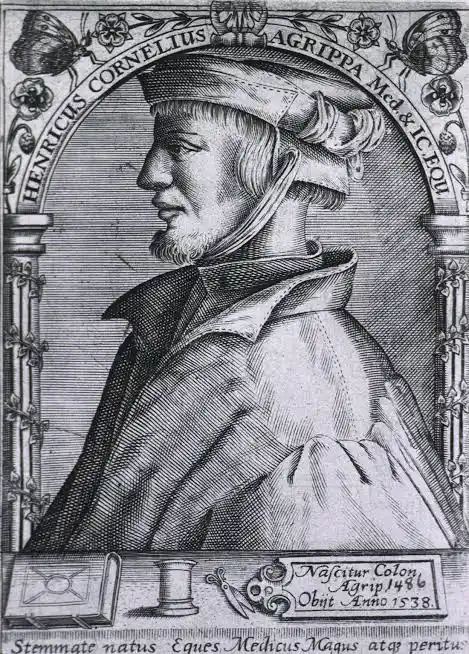
Папюс
Папюс (Жерар Анкосс, 1865–1916) — выдающийся французский оккультист, врач, каббалист и масон конца XIX – начала XX века, известный как один из отцов западного эзотеризма и автор популярных трудов по магии и Таро. Он синтезировал традиции каббалы, мартинизма и герметизма, оказав влияние на европейские оккультные общества и даже российскую элиту, включая императора Николая II.
Папюс отвергал материализм, видя мир как иерархию планов: физический, астральный и духовный, где человек через волю и инициацию достигает единства с божественным. Его учение подчёркивало практический оккультизм как науку, объединяющую каббалу, алхимию и христианский мистицизм для самосовершенствования и целительства. Ключевой идеей была “реинтеграция” — возвращение к первоединому через ритуалы и знание.
Он разработал техники астральной проекции, талисманов и магического лечения; влиял на Алистера Кроули и Гурджиева. Посвящал в мартинизм Николая II, основывал ложи Мемфис-Мицраим; его наследие живо в современных орденах.
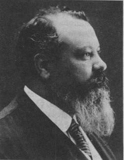
Хильдегарда Бингенская
Хильдега́рда Би́нгенская — немецкая монахиня, аббатиса возведённого под её руководством бенедиктинского монастыря Рупертсберг. Автор мистических книг видений, первая из которых «Путеведение, или Познание путей Господних», духовных стихов, песнопений, трудов по естествознанию и медицине, лексикона «Неизвестный язык» (Lingua Ignota). Пророчица. В 2012 году канонизирована Римско-католической Церковью в лике «Учитель Церкви».
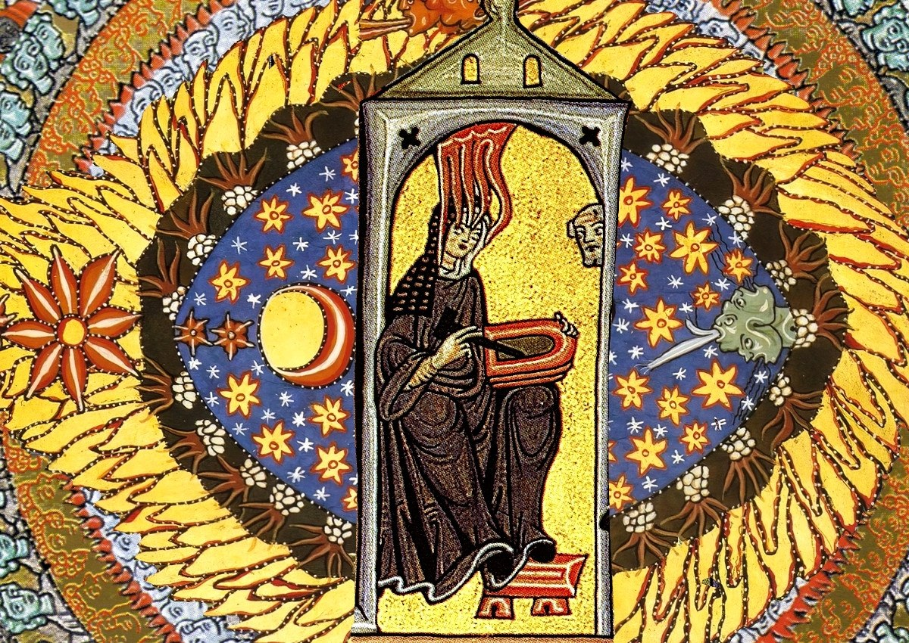
Lingua Ignota (с латыни: «неизвестный язык») — один из первых искусственных языков, описанный в XII в. аббатисой Хильдегардой Бингенской. Частично описан в трактате Хильдегарды «Lingua Ignota per simplicem hominem Hildegardem prolata», дошедшем до нас в двух манускриптах, датируемых приблизительно 1200 г.; это Висбаденский кодекс и Берлинский манускрипт. Описание представляет собой глоссарий из 1011 слов (большей частью существительных, но с включением немногих прилагательных), данных в «иерархическом» порядке — в начале следуют слова для Бога, ангелов и святых — с толкованиями преимущественно на латыни и в меньшей степени на немецком языке.
Лексика языка представляется априорной1, однако грамматика сходна с латинской.
Цель создания языка остаётся нам неизвестна. Также не установлено, был ли кто-либо помимо Хильдегарды знаком с ним. В XIX веке некоторые полагали, что язык задумывался как «идеальный» и универсальный, однако в настоящее время считается, что он должен был оставаться тайным и воспринимался автором как плод божественного вдохновения. Так или иначе, после смерти Хильдегарды никто не сохранял знания о её языке.
Единственный дошедший до нас текст на Lingua Ignota имеет следующее содержание:
O orzchis Ecclesia, armis divinis praecincta, et hyacinto ornata, tu es caldemia stigmatum loifolum et urbs scienciarum. O, o tu es etiam crizanta in alto sono, et es chorzta gemma.
1 — Априо́рный язы́к — искусственный язык, элементы которого не заимствованы из существующих языков, а созданы произвольно либо на основе какой-либо логической (философской) концепции.
Гарпократ
Гарпократ (др.-греч. Άρποκράτης) — это греческая интерпретация древнеегипетского бога Гарпехрути (Гора младшего или «Гора-дитя» — сына Исиды и Осириса). Древнегреческий и эллинистический бог молчания, тайны, а также зимнего или восходящего солнца. Связан со скорпионами, крокодилами, львами и лотосом; в народе почитался как защитник от змеиных укусов. Был частью Александрийской триады и получил широкое распространение в Римской империи, где статуэтки Гарпократа часто ставили в домах и садах как символ скрытности и невыразимости божественного.
Манассия
Мана́ссия — 14-й царь Иудеи из династии Давида после разделения Израильского царства.
Манассия отменил религиозные реформы своего отца Езекии и ввёл языческие элементы в храмовую службу. В Библии Манассия рассматривается как вероотступник, а его царствование трактуется как образец греха идолопоклонства, что, согласно Иеремии, было одной из причин разрушения Храма. Даже в Иерусалимском храме Манассия установил идола Астарты. Он проводил жертвоприношения в честь Молоха в долине Енномовой (Геенна) на высотах Тофета.
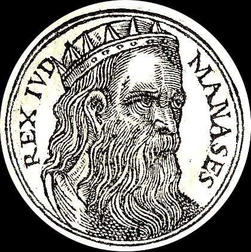
Ахаз
Аха́з — царь Иудейского царства.
При Ахазе в Иудее всё большее распространение стали получать финикийские и сирийские культы, что вызвало возмущение иерусалимского священства и пророков. Так, он установил в Иерусалиме статую Ваалу. Поэтому отношение к этому царю в Библии в значительной мере негативное.
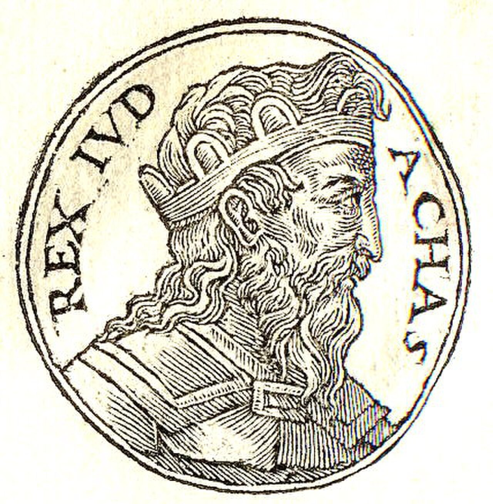
Ремфан
Ремфан (греч. Ραιφαν) — астральный бог, упоминаемый в Деяниях апостолов и в Книге пророка Амоса. Ассоциировался с некой звездой (Сатурн), поклонение которой прогневило Бога и способствовало вавилонскому плену.
Вы приняли скинию Молохову и звезду бога вашего Ремфана, изображения, которые вы сделали, чтобы поклоняться им: и Я переселю вас далее Вавилона.
— Деян. 7:43
Вы носили скинию Молохову и звезду бога вашего Ремфана, изображения, которые вы сделали для себя. За то Я переселю вас за Дамаск, говорит Господь; Бог Саваоф — имя Ему!
— Амос. 5:26, 27
Терминология/
Содомия
• Содомию принято понимать как:
а) В библейском смысле — нечто богомерзкое, ужасное и греховное;
б) В общем смысле — проявление (черного) юмора, одна из высших форм похвалы за юмор.
Минус патрон
Пора уже официально закрепить момент:
«Минус патрон» — означает какую-либо неудачу, провал.
Чем больше указано патронов во фразе — тем серьезнее провал.
По умолчанию используется «Минус три патрона» или специальный эмоджи.
”Доставлять”, “ещё торт”, “делать разницу”
«Доставлять», «ты/он/она доставляет мне», «Дурчане сегодня доставляют» — означает «доставить удовольствие», «доставлять положительные эмоции/смех». Пример использования: Если кто-то из участников отправляет какой-то юмористический контент или контент, который пришелся Вам по душе, можно прокомментировать: «Доставляешь сегодня».
«Легион ещё торт», «Дурчанерс ещё торт», «Рой ещё торт» — похвала по отношению к Дурчанам, которые очень хорошо доставляют, т.е. массово активят, принимают участие в каких-то ивентах, сидят в войсах, делают анкеты и т.д., то есть занимаются любой деятельностью, которая положительно сказывается на сервере.
«Ещё торт» —> «Ещё тот». То есть, контекст такой: даже спустя многие годы, Дурка способна доставлять удовольствие и вызывать смех, поэтому она «ещё та», то есть всё ещё достойна💪
«Делать разницу» — означает оказывать влияние, изменять ситуацию, быть значимым, вносить вклад, делать что-то существенное, что имеет последствия или значение. Фраза подразумевает, что чьи-то действия или слова приводят к заметным изменениям или имеют эффект. В более широком смысле, это означает быть важным, оказывать влияние на что-то или кого-то.
Текст с обилием новояза
Ультимативный пример текста с использованием различных новоязовских слов, жаргонизмов и сокращений:
«Кажется, всем известно, по какой причине хоминес проявляют Одига юдеос, но сегодня Мы поговорим не об этом. Пока МойНаш Разум Есмится кладезью разного негатива, Мы не способны открыть Его для другого. Плохие мысли и негатив Секар'ят Нас, вырывают Наши мозговые Флеб'ы. Пока ЯМы грезим об Интерэкзисе всего, Мы забываем, что Экзис нам дан для воспевания Нарратора, для воспевания его Аспектов, дабы хотя бы на время успокоить себя, прервать эти Долоани. Тем самым, почувствовав Серенитас хоть на мгновение. Угомони же свою Интру, пусть Легион движется неспешно и дисциплинированно, пусть не рвёт он тебя на части. И когда достигну ЯМы этого Порядка, тогда захлебнутся Билиас'ом враги наши, умоются Сангвис'ом они, в потугах сражений утонут они в Судор'е своём, извергая на животы свои мерзкую Мукус. Аве Нарратор эт эйюс Аспектус! Ад хомалино, Нарратор. Да поможет Аспект его Беллум в ТвоейНашей борьбе с самим собой…»
Философия, психология, социология/
Солипсизм, детерминизм, стоицизм
СОЛИПСИЗМ
ДЕТЕРМИНИЗМ. СВОБОДЫ ВОЛИ НЕТ. ЗА ВСЕМ СТОИТ РАССКАЗЧИК! ЭТО НЕ ПРОГРАММА В ГОЛОВЕ, ЭТО НАРРАТОР ПОВЕЛЕВАЕТ СВОЕЙ НЕЗРИМОЙ РУКОЙ!
Я НЕ ВЫБИРАЛ, ХОЧУ ЛИ Я ПИСАТЬ ЭТОТ ТЕКСТ. ВСЯ ЦЕПОЧКА СОБЫТИЙ ПРИВЕЛА К ТОМУ, ЧТО Я ЭТО ПИШУ. ВЫБОРА НЕТ, МЫ НИЧЕГО НЕ ВЫБИРАЕМ, А ЗНАЧИТ НЕ ЗА ЧТО НЕ ОТВЕЧАЕМ ЛИЧНО
ДЕТЕРМИНИЗМ + СТОИЦИЗМ
(Мой) Наш выбор не на что не влияет. А значит (мне) нам НУЖНО ТОЛЬКО СМИРИТЬСЯ С ПРОИСХОДЯЩИМ И РЕАГИРОВАТЬ СМИРЕННО. НО, В ТО ЖЕ ВРЕМЯ, «РЕАГИРОВАТЬ СМИРЕННО» — НЕ МОЙ ВЫБОР БЛЯТЬ. Однако, всё равно (моей) нашей воли не существует, а значит и беспокоиться нет необходимости.
МОИ мысли — повод для Рассказчика вмешаться.
С другой стороны, а почему бы Рассказчику не сделать так, чтобы я писал о нем? Может это вообще не Рассказчик? Может его зовут иначе? Может это только я интерпретирую его как Рассказчика?
Я засыпал сегодня с мыслями о том, что всё происходящее это просто результат замысла Рассказчика и моих мыслей, чувств. Я даже сам не могу заключить для себя, что всё то, что я вижу, слышу, чувствую, ощущаю — это объективная реальность. Её нет. И в этом есть смысл. Вся эта “объективная реальность” — это её проекция в нашей голове, которую мы создаём через свои органы чувств (зрение, осязание и др.)
Социологическое замечание
Я ещё короче сказать хотел, что мы фактически выбираем себе друзей и знакомых на основе нашего собственного индивидуального восприятия мира (вот это да!). То бишь, наши принципы и мироощущение напрямую влияет на то, с кем мы будем взаимодействовать чаще, к какому Рою себя будем приписывать и всё остальное.
Один Рой может быть неприятен другому Рою на основании того, что… Просто не совпали восприятия у Элементов первого и второго Роя. Вот и всё.
Фундаментально объяснил почему скинхеды не любят нефоров
Физический, ментальный, математический мир
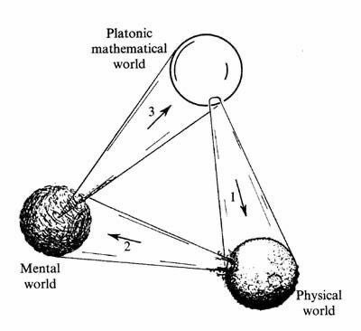
Со слов Омниссии:
На изображении представлена философская концепция, иллюстрирующая взаимосвязь между тремя мирами: физическим миром, ментальным миром и платоновским математическим миром. Эта схема часто связывается с идеями Роджера Пенроуза, который пытался объяснить фундаментальную природу реальности.
Компоненты изображения:
Physical world (Физический мир)
Это материальный мир, который мы воспринимаем через органы чувств. Он включает в себя всё, что можно измерить и наблюдать: физические объекты, законы природы и явления.
Mental world (Ментальный мир)
Это мир сознания, мыслей и восприятия. Он описывает субъективный опыт человека, включая осознание, эмоции и идеи.
Platonic mathematical world (Платоновский математический мир)
Этот мир представляет собой абстрактное пространство математических истин и структур. В платонической философии считается, что эти истины существуют независимо от человеческого разума и физического мира.
Взаимосвязи:
1 (Физический —> Ментальный)
Физический мир влияет на ментальный через восприятие: наши органы чувств передают информацию из окружающей среды в сознание.
2 (Ментальный —> Математический)
Ментальный мир способен постигать платоновский математический мир через абстрактное мышление. Человек использует разум для понимания математических истин.
3 (Математический —> Физический)
Платоновский математический мир лежит в основе физического мира. Законы природы часто выражаются через математические структуры, которые “управляют” физической реальностью.
Смысл:
Эта диаграмма иллюстрирует идею о том, что три мира взаимосвязаны и влияют друг на друга.
Например:
Математика (платоновский мир) описывает законы физики.
Физический мир формирует наше восприятие.
Человеческий разум способен постигать абстрактные истины математики.
Эта концепция подчёркивает сложность устройства реальности и взаимозависимость между её различными уровнями.
Мы не несем ответсвенность за события
“Мы не несем ответственность за события, возникающие вокруг нас, но мы несем ответственность за реакцию на них”
Коллективное бессознательное
Коллективное бессознательное, по Юнгу, это слой психики, общий для всех людей, содержащий универсальные, врожденные архетипы и структуры, которые влияют на наши мысли, чувства и поведение. В отличие от индивидуального бессознательного, оно не является результатом личного опыта, а передается по наследству.
Коллективное бессознательное — это нечто, что разделяют все люди, независимо от их культуры, национальности или индивидуального опыта.
В его основе лежат архетипы — универсальные, врожденные модели, образы или символы, которые влияют на наше восприятие мира и поведение.
Содержимое коллективного бессознательного не доступно для непосредственного осознания, но проявляется через сны, фантазии, мифы и другие формы символического выражения.
Коллективное бессознательное оказывает влияние на наши мысли, чувства и действия, формируя наши предрасположенности и реакции.
Примеры архетипов:
Юнг выделил такие архетипы как Тень, Анима/Анимус, Персона, Самость и другие, каждый из которых представляет определенную сторону человеческой психики.
Аполлоническое и дионисийское
Аполлоническое и дионисийское — это два полюса в человеке и культуре: принцип формы, меры и ясности (Аполлон) и принцип опьянения, экстаза и хаоса (Дионис). Эти термины особенно важны в эстетике Ницше, где трагедия рождается из их напряжённого единства.
Аполлоническое:
Связано с образом Аполлона: свет, день, солнце, ясность, гармония.
Означает рациональность, меру, форму, индивидуальность, упорядоченность, дистанцию и созерцание.
В искусстве — это мир ясных образов, чётких контуров, классической формы (например, гомеровский эпос, классическая скульптура).
Дионисийское:
Связано с образом Диониса: ночь, опьянение, экстаз, разрыв формы.
Означает иррациональность, хаос, страсть, слияние с «первоначальным единством», разрушение границ индивидуального «я».
В искусстве проявляется как порыв, дикое, хоровое, трагическое, где важна не форма, а переживание и разрыв меры.
Древнегреческая трагедия понимается как синтез обоих начал: аполлоническая форма удерживает и оформляет дионисийский поток страсти и ужаса.
В психологии/культуре говорят об «аполлонических» типах (рациональных, структурированных) и «дионисийских» (экстатических, интуитивных, разрушительно-творческих), подчёркивая, что подлинная целостность требует напряжённого баланса обоих.
Рассуждения о воле
«Твори свою волю: таков да будет весь Закон»
Различные табу и запреты формировались у существ из плоти и крови ещё в первобытных общинах (сотни тысяч лет назад) как способ защитить племя от опасных действий, сохранить ресурсы и остановить хаос. Любая угроза — от употребления ядовитой пищи до кровосмешения или кражи огня — могла привести к гибели всей группы. Нарушение жизненно важных правил воспринималось как вызов высшим силам и каралось. Именно из таких сакральных запретов позже развились первые представления о морали, религии и законе.
Прошёл огромный временной промежуток. Мясным мешкам больше нет надобности так остро обеспечивать свою безопасность и защищать какое-то племя.
Однако, различные ограничения, сформированные для базового выживания, отражаются эхом до сих пор. Некоторые порицаемые в прошлом деяния теперь являются нормой.
Тем не менее, современные моралисты продолжают проповедовать следование пустышкам, следование какой-то морали. И нет, это не обязательно какие-нибудь противные незнакомцы. Это могут быть и люди из вашего окружения, в частности родственники. Порой какие-то ограничения и правда оказывают положительное влияние на жизни, но их переизбыток — кошмар.
Существо, которое творит свою Волю и не обременено рамками — сверхсильное, могущественное.
Однако, это не значит, что теперь нужно отказываться от всех правил. Стратегическое следование законам и моральным ориентирам — более разумно, нежели полный отрыв. Поскольку, во втором случае велик шанс серьёзных последствий, особенно, если вы нарушаете законы своего государства, это очевидно. Вкус собственной независимой Воли очень сладок, но последствия — всё переворачивают.
Легион должен следовать правилам, иначе будет устранён. Всегда выигрывают те, кто пишет правила, кто пишет законы. Вам остаётся только смириться. Ни о какой справедливости не может идти и речи. Это борьба за контроль. Полномасштабная борьба. И кто-то должен быть снизу, дабы другие могли возвыситься.
Постулатум 24 Методички гласит: Морали нет. Она субъективна.
Да направит же вашу Волю Витиум в нужное русло, да избавит от оков, что не дают быть собой. Пусть же Аспект порочности Нарратора станет вашим рулевым.
Гиперверие
Гиперверие (англ. hyperstition) — это концепция, описывающая идеи, которые, будучи изначально вымыслом или даже абсурдом, сами себя делают реальностью за счет того, что люди начинают в них верить и действовать в соответствии с ними.
Термин был придуман в 1990-х годах Группой исследований киберкультуры (CCRU) под руководством философа Ника Ланда. Это явление сочетает в себе черты суеверия и самоисполняющегося пророчества. В отличие от обычной дезинформации, гиперверие работает как культурный вирус: оно изменяет поведение общества, общественные структуры и технологии, заставляя мир подстраиваться под выдуманный нарратив.
Макиавеллианский интеллект
Макиавеллианский интеллект — специфические интеллектуальные способности, обеспечивающие эффективное функционирование индивида в коллективе (способность к формированию коалиций, к организации совместного отпора «нарушителям установленного порядка», к придумыванию различных уловок для повышения своей репутации и социального статуса, к предвидению реакций и поступков «соплеменников» на основе «моделирования» их намерений, знаний и образа мыслей и т. д.).
Мультисенсорный континуум
Мультисенсорный континуум — это концепция в когнитивной психологии, нейробиологии и дизайне, которая описывает восприятие человека не как набор отдельных органов чувств, а как единый, непрерывный спектр взаимодействия всех сенсорных модальностей (зрения, слуха, осязания, обоняния, вкуса и проприоцепции). Вместо того чтобы воспринимать сигналы изолированно, мозг постоянно смешивает и калибрует их, формируя целостную картину реальности.
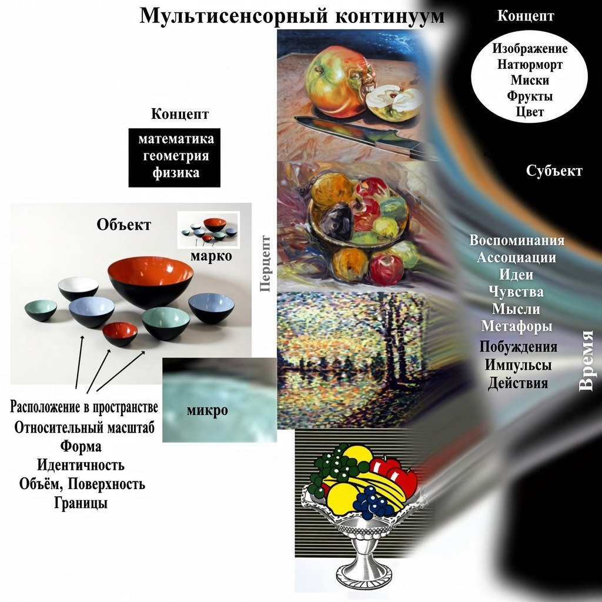
Танатос
Танатос по Зигмунду Фрейду — это бессознательное влечение к смерти, разрушению и возвращению к неорганическому, безжизненному состоянию.
Фрейд описал эту концепцию в работе «По ту сторону принципа удовольствия» (1920 год). Он понял, что психикой человека управляют две противоположные силы:
Эрос (влечение к жизни) — создает, объединяет, сохраняет и развивает;
Танатос (влечение к смерти) — разрушает, разъединяет и стремится к абсолютному покою без напряжения.
Как проявляется Танатос?
Внутрь (аутодеструкция): стремление к покою, самосаботаж, депрессия, причинение себе вреда, вредные привычки и суицид;
Вне (агрессия): насилие, жестокость, садизм, войны и ненависть к другим людям.
Мутная вода становится прозрачной, если её не трогать
Связанное с Нарраторством/
Посланники Молоха на Земле
Каждый Элемент по своей сути является посланником Молоха на Земле, является человеческим воплощением антихриста и Демиурга.
Через осознание своей хаосоподобной природы и своего ужасного начала — Мы можем придти к манифестации Молоха.
Каждый Элемент, осознав порочность своего экзиса и своей судьбы может повлиять на призыв истинного Молоха.
Проблемой являются те, кто всерьёз придерживаются каких-либо пацифистских религий и верований, кто соблюдает этику и мораль, нравственность и законы. Священнослужители, монахи и прочие, кто пытается противостоять вездесущей энергии Хаоса самого Молоха — никогда не смогут обуздать Серенитас и они будут вынуждены из раза в раз проживать тысячи жизней, храня при себе воспоминания предыдущих.
Ибо истинная агония есть вечное перерождение без возможности вкусить сладкого поцелуя Интерэкзиса.
Только через осознание и принятие своей мерзотной человеческой натуры — Мы можем осознать необходимость вмешательства Молоха в людские дела.
Звания в языческой общине
Положняк по нашей язычкой общине. Звания:
1 Самое высшее: Жрец
2 Помощник Жреца: Диакон
3 Тот, кто только начинает изучать писания Дурки: Аколит
Открытие новых Божеств
Вопреки возможным вопросам о том, что Взевус раскрывает знания о Божествах, только лишь услышав или увидев новое прикольное имя, и вопреки всем сомнениям в моей сущности Жреца, я собираюсь твёрдо и чётко заявить:
Знания о новых Божествах преподносит ко мне лично Нарратор, вернее, его Аспект — Деус Рединат, заставляющий события складываться так, чтобы вы узнавали новое. Каждое моё слово написано под чутким незримым взглядом Нарратора. А всех тех, кто имеет сомнения по этому поводу и не признает новых Божеств, ждёт мучительная погибель, организованная Патрешере, который заставит всех еретиков гнить изнутри, сея в их кишки личинок, выедающих проходы наружу, и все неверующие никогда не смогут найти покоя, а гибель их не приведет к успокоению души.
Хаотичен ли мир?
Итак, мы знаем, что Нарратор является движущей силой и любые происходящие события — это изъявление его Воли.
Но, если отвечать конкретно на вопрос «Хаотичен ли мир, в котором мы живём?», то какой должен быть ответ?
Ответ кроется в двух Абсолютах. В двух противоположностях, которые как раз объединяет в себе Пайерида. Наш мир — Абсолютный Хаос и одновременно с этим — Абсолютный Порядок. Упорядоченный Хаос, Хаотический Порядок.
Любое происшествие продиктовано Нарратором одновременно с позиции Хаоса и с позиции Порядка. То есть, иными словами, любое происшествие — это случайность и не случайность одновременно. Если с одного взгляда для события «А» не было никаких предпосылок, то с иного взгляда, событие «А» — следствие события «Б».
Существа из плоти и крови — должны были появиться на свет и никогда не должны были появляться. Все мы, фактически, застряли в этой суперпозиции существования и несуществования. Мы существуем в конкретный момент, но не можем быть уверены, что данное существование — последнее и единственное. А если Интерэкзис — освобождение от существования => освобождение от страданий, то в данный момент мы не существуем в привычном понимании, а страдаем, захлёбываемся собственными мучениями, но в конечном счете мы освободимся от этого кошмара и тогда уже начнем по настоящему жить. Или этого не будет… Опять же из-за двойственности: есть определённость и определённости нет.
Истины нет ни в чем и нигде. Даже в фундаментальных вещах. Ибо, не можем мы быть уверены, что правильно даём толкование вещам и правильно их воспринимаем. А мы не можем их правильно воспринимать из-за того, что мы далеко не идеальны и совершенно не соприкасаемся с Абсолютом.
Есть ли Абсолютная истина в Нарраторе? И да, и нет. Он безупречен, он Абсолют, он не обременен органами чувств, присущими человеческому роду, а значит, казалось бы, Абсолютен. Но, вместе с тем, представляя вторую крайность — крайность лжи, отрицания, упадка, мы можем сказать, что он и не Абсолютен.
Истинного знания — нет. По крайней мере для нас. Есть лишь его крупицы, находящиеся в суперпозиции.
Как мы можем обуздать “истинное знание”, если не можем быть уверены даже в том, правильно ли мы толкуем Нарратора и его Волю?
И всё из-за несовершенства нас, как существ.
Нет ни знания, ни воли.
Человеческая “воля” субъективна и продиктована только Нарратором.
У меня нет выбора: писать ли это сообщение или нет? Я пишу его в конкретный момент времени и намерен отправить. У меня нет воли удалить его, прекратить писать. Это событие должно было произойти. И так с подавляющим большинством вещей (если не со всеми…)
Фактически, мы не живём свою жизнь, а исполняем Волю Нарратора. Каждый из нас. Какой бы мерзкой и неправильной она не была. Мы все заложники своего Экзиса.
Просто не сопротивляйтесь и дайте этой воле реализоваться, ибо даже сопротивление — это не ваше изъявление, а то, что продиктовано заранее.
Стало быть, если воли моей нет ни в чем, то я могу писать всё, что вздумается и делать всё, что вздумается. И это отсутствие действий или наоборот активные действия могут запустить “волю Рассказчика” в других.
Цифровое пространство идеально
Адрамалех: Сейчас с [Взевусом (ред.)] просто общались, он написал 1, а я ответил 0, что напомнило мне о двоичном коде. И тут меня осенило — абсолюты это же булевые значения. Стремление к ним потому и стремление к непостижимому идеалу, ибо это цифровой идеализм.
При этом получается, что все боги — это нечто цифровое, и именно ПОЭТОМУ это все появилось здесь, в дурке, после того, как МХМ направил Кнаул. Получается, идеальное нарраторство — это именно что явление в цифровой системе
Нельзя присвоить булевой переменной “возможно частично” или “ну вроде так”, она может быть либо “true”, либо “false”
========================
Взевус: Цифровое пространство идеально, получается, с технической точки зрения, ибо построено на Абсолютах
Экстазис Хаотикус Хтониус
ЭКСТАЗИС ХАОТИКУС ХТОНИУС
Хаотичный Хтонический Экстаз (Экстазис Хаотикус Хтониус) — ощущение, достигаемое во время определённых ритуалов и деяний, зачастую способствующих Манифестации Полководцев Хаоса или иных “Тёмных” Аспектов Нарратора.
“Дарителем” ощущения Экстазис Хаотикус Хтониус принято считать Витиума, как покровителя Пороков, извращений, зависимостей и остального.
РИТУАЛИС ОВЕРДОЗИС — ЕСТЬ ЭКСТАЗИС ХАОТИКУС ХТОНИУС
ЯДЕРНЫЙ ВЗРЫВ — ЕСТЬ ОРГАЗМ И ЕСТЬ ЭКСТАЗИС ХАОТИКУС ХТОНИУС
Сенсорная депривация
Рекомендуемый способ усиления манифестации Полководцев Хаоса при обращении к ним во время ритуалов и практик — прибегнуть к сенсорной депривации.
Для тех, кто вообще понятия не имеет:
Сенсорная депривация — это частичное или полное прекращение воздействия внешних раздражителей на один или несколько органов чувств, из-за чего поток сигналов в центральную нервную систему падает до минимума.
Простыми словами: чтобы Манифестация прошла наиболее успешно, во время обряда следует оградить себя от источников любой информации. Хорошим решением будет проведение ритуалов в закрытой неосвещенной комнате без окон (туалет, ванная комната), без единого источника света. Следует отказаться от взятия телефона, за исключением — если это необходимо для ритуала (включение ритуальной музыки, например). Если имеете рядом с собой гаджет — стоит выключить уведомления, чтобы посторонние звуки не мешали концентрации.
Вместо ритуальной музыки можно использовать белый шум, включенный в наушниках. Это более верный вариант, поскольку отрезает доступ к звукам извне.
Советы выше не являются призывом к действию и носят исключительно рекомендательный характер.
Меры предосторожности:
— Немедленно прекратите практику, если чувствуете тревогу/панику;
— В полной темноте можно легко травмировать себя об окружающие предметы, не стоит делать резких движений, даже если полностью уверены в том, что запомнили планировку комнаты у себя в голове. Если комната большая — делайте шаги осторожно. Вы явно не хотите случайно поскользнуться и удариться затылком о ванну;
— Наличие второго человека, который будет контролировать обстановку и окажет какую-либо помощь в случае чего — большой плюс, но только если этот человек не нарушает вашу депривацию (не включает громкую музыку, не издает громких звуков и пр.)
Связанное с Роем/
Деструктивное поведение
Деструктивное поведение бывает следующим:
- Антисоциальное: преступления, агрессия, вандализм, жесткость, нарушение законов и прав людей.
- Аддиктивное: алкоголь, табак, наркотики, азартные игры, порно-зависимость и другие зависимости.
- Суицидательное (Интерэкзисное): РПП (как один из негативных “симптомов”), самоповреждения, шрамирование.
- Фанатическое: слепое следование идеям, культам, увлечениям.
- Нарциссическое: чрезмерное самолюбие, отсутствие эмпатии, унижение окружающих.
- Аутическое: самоизоляция, избегание общества.
- Конформистское: подчинение чужому влиянию, авторитету.
Молох благословил все эти деяния
Разделяй и властвуй
**Разделяй и властвуй — нет.
Разделяй и модифицируй, превращая в часть Легиона, а несогласных — уничтожай
ЛИБО ЛЕГИОН, ЛИБО ОМНИЦИД!**
Хаотичность и Нестабильность Элементов
«Мужчина и женщина дополняют друг-друга. Мужчина больше полагается на рациональное, более эмоционально стабильный, женщина же — больше на чувства, она более ранимая» — АБСОЛЮТНОЕ ЗАБЛУЖДЕНИЕ.
Что мужской Элемент, что женский Элемент — все они абсолютно Хаотичные и Нестабильные, поскольку «Элементы созданы из субстанций, чьи покровители — Полководцы Хаоса».
Различия только первовеществах из которых Полководцы взрастили убогие подобия. У мужских Элементов, как помним, первовещества — это желчь и кровь, а у женских — пот и слизь.
Малум же заполнил оба котла одним и тем же веществом, подчеркивая единый источник катастрофы — в целом человеческий род, не зависимо от пола.
Мужчина и женщина дополняют друг друга только в контексте Хаоса. Порой в срезе экстаза и эйфории, а порой в срезе кошмара и ненависти.
А любое взаимодействие двух мужских Элементов так или иначе ведёт к разногласиям, желанию унизить; это взаимодействие рождает конкуренцию, омерзительное ощущение, словно кто-то похожий на тебя может дать что-то большее, выжать из себя больше. И это прослеживается во всех сферах Экзиса.
Взаимодействие двух структурно похожих Элементов необратимо ведёт к выделению “желчи” (метафорично) и кровопролитию (порой не только метафорично).
Однако, не стоит забыть, что это работает и с женскими Элементами. Существа человеческие запрограммированы ненавидеть себе подобных, запрограммированы КОНТРОЛИРОВАТЬ И ВЛАСТВОВАТЬ, не допуская к рулю управления жалкие подобия НА СЕБЯ, даже если руль этот — нечто абстрактное.
И может возникнуть логичный вопрос: как это так выходит, что Хаотичные по определению существа стремятся к контролю и власти?
Дело в том, что Хаотичность эта проявляется наружу, на окружение, Элемент посылает Хаотичную энергию на окружение, заставляет содрогнуться чей-то дух, заставляет испытать плохие эмоции. Внутри же Элемент может и не ощущать этого Хаоса, он наоборот будет стремиться помочь сформироваться своему желанию контроля. И контролем своим, словно щупальцами, он попытается окутать окружающий его Хаос, который он сам же и создал. А если Воля Элемента (((вернее Воля Нарратора))) была в том, чтобы ЯВИТЬ ХАОС, то сам факт Волеизъявления — это и есть КОНТРОЛЬ. Ибо «Я самолично создал это! И на мне, и только на мне, бремя контроля!».
Но, говорить, что внутри Элементов царит порядок — будет большой ошибкой. Хаос есть всегда, везде и не зависимо от обстоятельств. Только разница лишь в том, что есть контролируемый Хаос, а есть тот, из-за которого Элементы теряют контроль над собственным телом, эмоциями и действиями. Это как болезнь, которая окутывает, выводит из строя. Будто в механизм залили не машинное масло, а что-то наоборот вязкое, мешающее нормально существовать.
В то же время и Абсолютный покой недостижим, как и Абсолютный порядок. Ко всему этому можно лишь прикоснуться в Речах Последних Дней.
Вне категорий/
О природе человеческого мозга
О природе человеческого мозга (из диалога):
Вообще, если рассмотреть только современных людей, нас с тобой например, то природа мозга просто биологическая. Он развился вместе со всем остальным нашим телом. Но, тем не менее, его способность хранить разную информацию на долгое время (хоть это и крайне плохой способ хранения. Но об этом как-нибудь потом) — это фантастика, не иначе. Чтобы обычный человеческий орган мог создать такое ОГРОМНОЕ количество нейронных связей и продолжать создавать на протяжении всей нашей жизни — это что-то невероятное, тем не менее существующее…
НО, таким он существует только в нашем понятии. Это то, как мы его понимаем, как можем увидеть где-то на картинках, как воспринимаем его. Однако объективно он может представлять из себя вообще нечто другое, непостижимое для нас. А коль оно не постижимо, то я и сказать больше ничего не могу об этом. Я могу только говорить о том, как лично я воспринимаю его.
Это равносильно тому, если я посмотрю на яблоко и начну его описывать. Для меня оно будет Проекцией-1, для другого человека, который начнет его описывать — это уже будет Проекция-2. И эти проекции никогда не повторяются и не могут быть схожи у людей, сколько бы не были они одинаковы. Один человек визуализирует в памяти яблоко одним образом, другой человек другим.
Для кого-то первостепенным является его (яблока) цвет. А кто-то начинает визуализировать его с контура. А третий может вообще представлять яблоко не как единицу объекта, а как совокупность — корзину с яблоками. А четвертый начнет визуализацию с яблони.
Мозг, опять же сугубо в моем представлении, похож на грецкий орех, если без заумных слов. Если меня спрашивают про то, на что он похож, я первым делом визуализирую у себя в голове мозг с картинок в интернете и грецкий орех. ОДНАКО, ввиду особенностей мозга человека, если спросить меня через месяц, два месяца, год, 5 лет, 10 лет, не знаю, спросить когда-нибудь в будущем «на что похож мозг?» я уже могу выдать другой ответ, потому что Я уже привяжу понятие мозга, его визуал, к какому-то другому объекту, нежели грецкий орех. Может я увижу что-то более подходящее под ответ на вопрос.
ИЗ ЭТОГО ВСЕГО ИСХОДИТ ВЫВОД, что 1) никакой объективной реальности нет 2) мы можем воспринимать мир и его объекты по разному в различный момент времени. То есть, никакой стабильности нет
Ах да, почему я сказал «если рассматривать нас с тобой, то есть современных людей» — дело в том, что лично я до сих пор не могу понять и осознать, откуда взялся первый человек. А второй? А как они смогли размножиться? Неужели не должно было случиться так, что все последующие поколения были бы с мутациями? Адама и Евы никогда не было. Чтобы развиться всему человечеству, как мне кажется, нужно было бы огромное количество людей, кровно не связанных друг с другом. И их должны были закинуть в одно пространство, и условия должны были бы сложиться ИДЕАЛЬНО, чтобы они в итоге дали потомство, а то в свою очередь ещё потомство и так до наших времён
А про то, что мозг — плохой способ хранения информации… Тут только скажу, что мы запоминаем не конкретное событие и его детали, а то, как мы себя ощущали в тот момент времени, можно сказать, что когда мы вспоминаем что-то из прошлого, то мы вспоминаем то, как мы вспоминали то, как мы вспоминали то… Это постоянный цикл. И чем дальше текущий момент от события, которое было в прошлом — тем длиннее этот цикл. Воспоминания смазываются. Какие-то детали пропадают. Остается лишь каркас. Мы не можем запомнить надолго всё в точности, как было.
Воспоминания можно сравнить с больным деменцией дедушкой, которого каждый день просят нарисовать одну и ту же картину по ее описанию. И если в начале, когда болезнь прогрессирует слабее, он сможет более менее изобразить объект, то каждый следующий день, по мере прогрессии болезни, он будет справляться все хуже. А особенно, если просить его нарисовать именно ту картину, которую он нарисовал день назад — это более хорошо отражает мою мысль про память
Любое событие из прошлого — проекция этого события в головах тех, кто застал это событие. По этой же причине кстати и происходит ситуация, когда “переписывают историю” (да, зачастую это просто пропаганда, но порой люди просто выдвигают то, как ОНИ понимают событие).
Память “запоминает” всё субъективно. И как сказал ранее, в конечном счете детали того или иного события просто размываются и мы отдаем меньше предпочтения тем деталям, на которые когда-то делали акцент.
Из-за этого, а еще из-за того, что мозг отказывается запоминать плохое как правило и пытается вытеснить какой-то плохой опыт — почти любое прошлое мы вспоминаем со словами «раньше было лучше», даже если раньше было нихуя не лучше.
Как использовать (требования к написанию) особых слов и выражений
Рекомендация о том, как лучше использовать особые слова и выражения, которые были описаны в методичке (такие как Интерэкзис, Интра, Фамес, Морбус, Рой, Легион и др.)
При использовании таких выражений рекомендуется их написание с заглавной буквы, дабы выделить и показать то, что это особое слово.
Кроме того, существуют такие слова, которые не являются какими-то сверхъестественными, но тоже требуют особого внимания. Это, например, Разум, Сознание и др. То есть, широко применяемые в разных источниках, но имеющие особое значение в рамках Дурки.
Порезы
После того как Элемент выполняет Секаре Флебы, иногда советуют лечь в тёплую воду, чтобы облегчить состояние. Это связано с тем, что тёплая вода расширяет сосуды и может временно уменьшить Долокор, а также создать чувство успокоения и расслабления. Однако с медицинской точки зрения такой метод не является правильной или безопасной помощью при Секции Флебы.
Почему тёплая вода?
Расширение сосудов: Тёплая вода расширяет Флебитные сосуды, что может усилить Сангвистику и помочь расслабиться.
Обезболивание: Тёплая вода оказывает успокаивающее действие, снижая Долокор.
Психологический эффект: Тёплая вода может создавать чувство комфорта и безопасности, уменьшая тревогу.
Почему это опасно?
Усиление кровотечения: При расширении Флеб кровотечение из Секционных Флеб может усилиться, что опасно для жизни.
Риск потери сознания: Из-за потери Сангвиса и расслабления сосудов возможно головокружение и обморок.
Отсутствие правильной первой помощи: Правильные действия — остановка Сангвиса, наложение давящей повязки, приподнятие конечности и вызов скорой помощи.
Что делать при Секции Флебы?
Немедленно остановить Сангвистику, прижав рану.
Лечь и приподнять конечность выше уровня сердца.
Наложить стерильную повязку.
Вызвать медицинскую помощь.
Вывод: Лежать в тёплой воде после Секции Флеб — это скорее психологический способ облегчить состояние, но с медицинской точки зрения это опасно и не рекомендуется. При таких травмах нужна срочная профессиональная и правильная первая помощь.
Замещение
«Великое замещение» (фр. grand remplacement, также «теория замещения» и «теория великого замещения») — белонационалистическая ультраправая теория заговора, согласно которой при бездействии или прямом содействии элит осуществляется постепенный процесс замещения «белого» населения Франции, а также всей Европы в целом другим населением — арабами, берберами, африканскими чернокожими неграми и вообще представителями народов, традиционно проживающих на территории Африки и Ближнего Востока. Методами осуществления процесса «великого замещения» являются массовая иммиграция, высокая рождаемость в мигрантской среде, а также низкая рождаемость европейцев
Отрывок из вики (ненавижу её), чтобы передать основную суть.
И тут, как и во многих, если не во всех статьях, полно метасмыслов.
Во-первых, это не националистическая теория, а теория, которую рассмотрит любой белый здравомыслящий человек.
Во-вторых, это не теория заговора, а реально происходящие события.
Про «африканских чернокожих» вместо «негров» вообще молчу, но от соевой говновики другого ожидать и нельзя, моментально будут правки от других юзеров или модеров, удаление неугодных слов и замена толерантным новоязом. В таком мире живём.
Арбатель
Arbatel (Арбатель), или «Arbatel De Magia Veterum» (Арбатель: О магии древних), — это влиятельный латинский гримуар (книга магических знаний) эпохи Возрождения, впервые опубликованный в Швейцарии в 1575 году, который описывает церемониальную магию, фокусируясь на связи человека с небесными иерархиями и духами планет, предлагая позитивные и прагматичные подходы к магии.
Патафизика
Патафизика — это ироничная «наука о мнимых решениях», созданная Альфредом Жарри, которая изучает «законы, управляющие исключениями», выходя за рамки физики и метафизики, и исследует феномены, стоящие за явлениями
Синхроничность/синхрония
Синхроничность (или синхрония) — это понятие, введенное Карлом Юнгом, описывающее значимые совпадения двух или более событий, которые причинно не связаны, но имеют глубокий смысл для наблюдателя, соединяя внутренний мир (мысли, чувства) с внешним миром. Это не просто случайность, а «непричинная» связь, помогающая самопознанию, преодолению рационального мышления и указывающая на скрытые связи между психикой и материей. Классический пример — сон о скарабее и реальный жук, постучавший в окно во время рассказа о сне.
Мартинизм
Мартинизм представляет собой мистическое и эзотерическое направление христианства, возникшее в XVIII веке во Франции и связанное с именами Мартинеса де Паскуалли и Луи-Клода де Сен-Мартена. Его доктрина фокусируется на падении человека из божественного состояния в материальный мир и пути “реинтеграции” — возвращения к Богу через внутреннюю молитву, медитацию и духовное просветление, известное как “Путь Сердца”. Папюс в конце XIX века возродил эту традицию, основав Орден Высших Неизвестных (Орден мартинистов), который объединил элементы каббалы, масонства и мистицизма.
Мемфис-Мицраим
Мемфис-Мицраим — общее название разных синтезированных в один уставов египетского направления масонства, известных с конца XVIII века и реорганизованных под влиянием Гарибальди в 1881 году. Наибольшая система масонских степеней за всю историю масонства.
Дискордовская миграция
Теория дискордовской миграции.
Из многолетних наблюдений.
Если на сервер заходит 1 Элемент — он просто ищет себе пристанище, досуг. Самый частый тип миграции. Скорее всего в этом случае Элемент будет пассивнее, чем в остальных случаях. Имеет место быть приглашение других товарищей, но не путать с другими типами миграции, описанными ниже. Вероятно, будет вести себя скованно, неуверенно. Необходимо как можно быстрее расположить к себе и приобщить к порядкам сервера;
Если на сервер одновременно заходит 2-3 Элемента — это разведка с различными целями, начиная от задела на дальнейшее приглашение других Элементов (дабы окончательно закрепиться) и заканчивая дестабилизацией обстановки. Юзеры, как правило, активны, но действуя сообща, по отдельности могут проявлять пассивность. Ликвидация одного Элемента из цепочки, с большей долей вероятности приведёт к добровольному выходу остальных, либо переход к полностью пассивному режиму. Вместе часто могут позволять себе слишком смелое поведение, игнорирование правил, могут пытаться распространять свои идеи и пытаться изменить сервер под себя. Такое желательно сразу детектить и пресекать. Случаи добропорядочной разведки довольно редкие. Приобщить к порядкам сервера тяжелее и добиться 100%-ного покрытия вряд ли получится;
Если на сервер одновременно заходит 4-5 и больше Элементов — это рейд (в положительном или отрицательном значении) или же «ассимиляция». Окончательный этап, закрепление на сервере. Элементы действуют по тем же паттернам, что и “разведчики”, но с возможностью привлекать к делу новых Элементов. Случается крайне редко, поскольку отыскать одновременно более 5ти доверенных людей с дальнейшим приглашением на сервер — тяжёлая задача для опытных Легатов. Исключение: переезд со старого сервера на новый, здесь дело в разы проще.
Бабалон
Бабалон (Babalon) — богиня в мистической системе Телемы, известная также под именами «Багряная Жена» (Scarlet Woman), Великая Мать (Great Mother) и Мать Мерзостей (Mother of Abominations). В «Книге Закона» ее имя отсутствует, но появляется в других, более поздних произведениях Алистера Кроули.
В различных мистических системах Бабалон может отождествляться с Шехиной каббалистов, Софией гностиков и т.д. В современной оккультной культуре Бабалон часто отождествляют с Инанной, Эрешкигаль или Гекатой как богиней колдовства.
В общем виде Бабалон символизирует потенциальную сексуальность и Божественную искру, падшую в наш материальный мир и оживляющей его. В Символе веры Гностической мессы она отождествляется с Матерью-Землей как величайшим источником плодородия. В наивысшем своем проявлении Бабалон — супруга или невеста Хаоса («Отца Жизни», мужского творческого начала) и олицетворенные врата Города Пирамид. Таким образом, на каббалистическом Древе Жизни Бабалон связана с двумя сефирот: Малкут (Божественной Дочерью) и Биной (Божественной Матерью).
В описаниях Бабалон нередко предстает как священная блудница, восседающая верхом на Звере. Ее основной символ — Чаша (Грааль). В алхимии блудница — это prima materia, погруженное во тьму неискупленное тело.
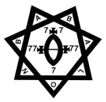
Число имени Бабалон составляет 156, как по еврейской, так и по греческой гематрии. Кроме того, число 156 — это количество квадратов в каждой из четырех енохианских Сторожевых Башен, или Скрижалей стихий (12 столбцов умноженные на 13 строк), а эти квадраты, в свою очередь, представляют собой развертки усеченных пирамид, как это представлено в учении Ордена Золотой Зари. На Великой Печати Ордена A.’.A.’. присутствует особая запись числа 156 — при помощи семи семерок (7 — количество букв в имени Бабалон). 77 + (7+7)/7 + 77 = 156. Возглас экстаза соединения с Богом, «HRILIU», звучащий в Гностической мессе, по греческой гематрии также дает число 156 (Ро-Йота-Лямбда-Йота-Дигамма). Кроме того, работе с Формулой Бабалон посвящена одна из «Святых книг Телемы» — «Liber Cheth vel Vallum Abiegni sub figurâ CLVI».
Коронзон
Коронзо́н (англ. Coronzon) — демон, который был впервые упомянут в конце XVI века оккультистами сэром Эдвардом Келли и Джоном Ди в работе, посвящённой енохианской магии.
В XX веке он стал одним из божеств в пантеоне телемы, религии, созданной оккультистом Алистером Кроули, который изменил его имя для использования в собственном учении, добавив в него букву «h», так, чтобы имя стало читаться «Хоронзон» (англ. Choronzon), после чего стал называть его Обитателем Бездны.
Металингвистика
Металингвистика — это разговор о языке как о части человеческой жизни и культуры, а не только как о системе звуков и грамматик.
Металингвистика занимается тем, как язык связан с другими формами поведения и культуры: общением, ролями, ценностями, контекстом, диалогами между людьми.
В отличие от “чистой” лингвистики (где базовая единица — слово, предложение, структура), металингвистика берёт за единицу высказывание в ситуации: кто кому говорит, в каком контексте, с каким подтекстом и ответом.
В широком смысле металингвистика — это уровень, где мы изучаем не только “как устроен язык”, а “как через язык живут сознание, культура, общение”.
В таком случае, если гипотетически представлять паталингвистику, то это была бы спекулятивная наука о том, как язык разваливается, перескакивает, паразитирует сам на себе и производит лишние, ненужные смыслы.
Семантика — это область, которая изучает, что означают слова, фразы, предложения и как через язык передаётся смысл.
Метасемантика изучает значение самого значения — то есть как мы описываем, анализируем и структурируем семантику на более высоком уровне. Это как метаязык, но применённый именно к смыслам: референция, денотат, интерпретация, композиция значений. Например, семантический метаязык использует термины вроде «денотат», «коннотация», «гипероним» для разбора того, что означают слова и предложения.
Четвертый путь
Учение Георгия Гурджиева — это «Четвертый путь» саморазвития, сочетающий работу над умом, эмоциями и телом для пробуждения от «механического сна». Основная идея заключается в том, что человек — спящий автомат, живущий множеством противоречивых «я», но через самовспоминание и сверхусилия может стать сознательным существом.
Тонкие тела
Тонкие тела — устоявшееся название для обозначения невидимых (и не обнаруженных наукой) духовно-телесных оболочек человеческого тела, являющихся промежуточными слоями между душой (сознанием) и физическим телом.
Концепции тонких тел используются в различных практиках духовного развития и альтернативной медицины прежде всего в индуизме (йога и тантра), тибетском буддизме и даосизме. Некоторые исследователи отмечают наличие концепций тонких тел в иудаизме, неоплатонизме, суфизме, шаманизме и в других мистических и религиозно-философских системах.
Дух и 4 стихии
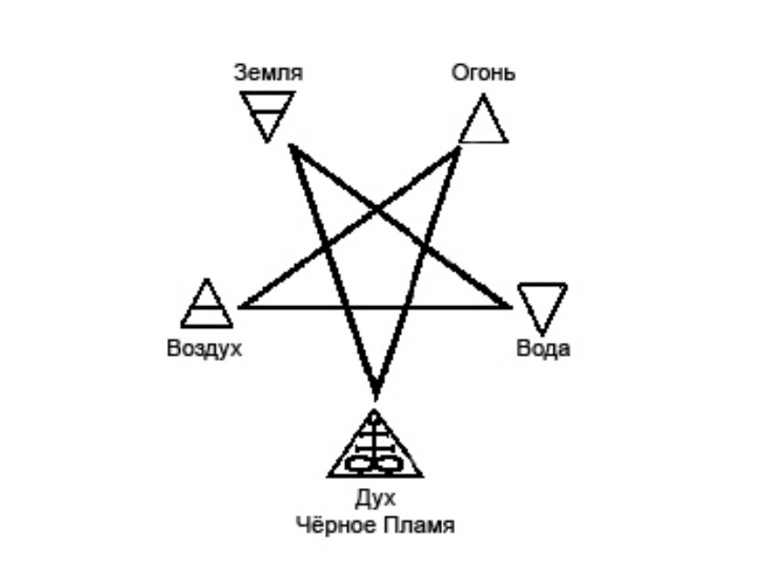
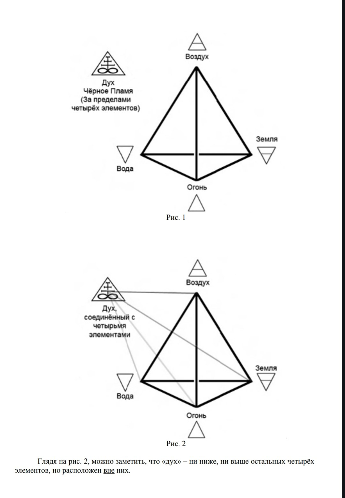
Семь центров силы тела
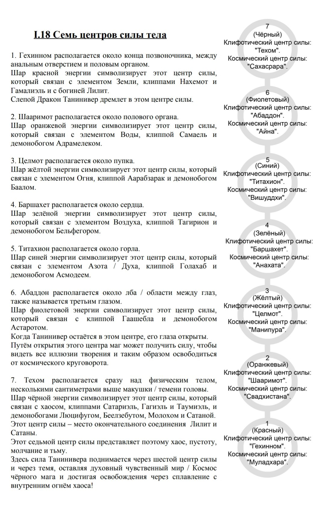
Рассуждения о табу и создателе
Забавнее становится и из-за того, что многие явления, нормальные и естественные в животном мире, в “человеческом” же — либо табу, либо вовсе наказуемы.
Тот же каннибализм и инцест, который спокойно практикуется определёнными нечеловеческими существами, почему-то имеет ярко негативный окрас, когда о подобном заявляет “высшая степень эволюции”.
Стало быть, что и сами животные — тоже неидеальные, жутко странные и хаотичные. Но, почему же они такие? Кто или что намеренно или не специально сделало их такими?
Если бы вы были условным Богом, который создает новую жизнь, то создавали бы эту жизнь по своему подобию, с мыслью, что эта форма жизни в будущем сможет противостоять вам, притом не в метаморфическом смысле? Почему-то кажется, что вы не рискнули бы.
Оттого и получается, что создатель этого кошмара — высокомерный параноик, намеренно посылающий такие испытания, которые будут сдерживать существ из плоти и крови, не давая им развиться в более совершенную форму и сместить самого создателя.
Из этого выходит, что Божества во многих верованиях подвержены таким же порокам, подвержены такому же Хаосу, но в отличие от простых (((смертных))) обладают исключительностью по части силы и возможностей.
Скорее всего Нарратор даже не является создателем как таковым. Его назначил кто-то иной. Назначил вести всё это повествование, управлять событиями, управлять людьми. Но, видимо что-то дало трещину, раз задолго до Нарраторства мясные существа уже строили теории о наличии Демиурга.
Нарратор — не враг, он такой же заложник обстоятельств, как и все вы. Он нечто нейтральное, (((независимое))), нечто ведущее очень длинный рассказ с бесчисленным множеством сюжетных линий под названием «история».
Ровно как невиновен Нарратор в этом кошмаре, так тем более невиновен и Молох, а напротив даёт надежду на падение исключительного главенства некого Демиурга, с приходом полного уничтожения всего на свете и за его пределами. Когда Демиург не сможет взращивать в ком-то свои коварные грёзы — тогда-то он и погибнет.
Дети безумия
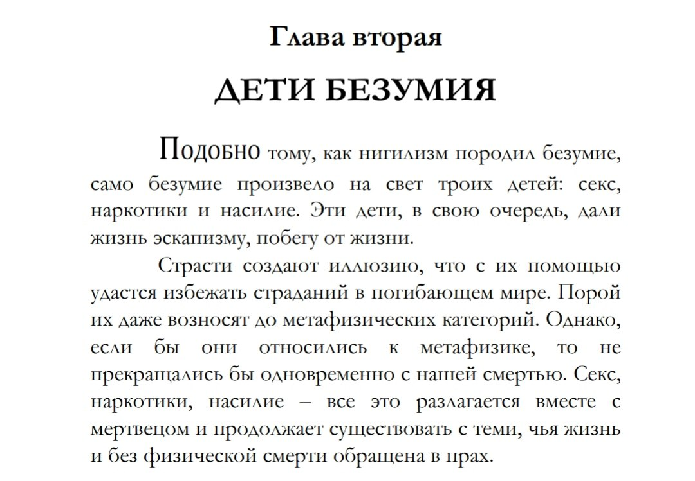
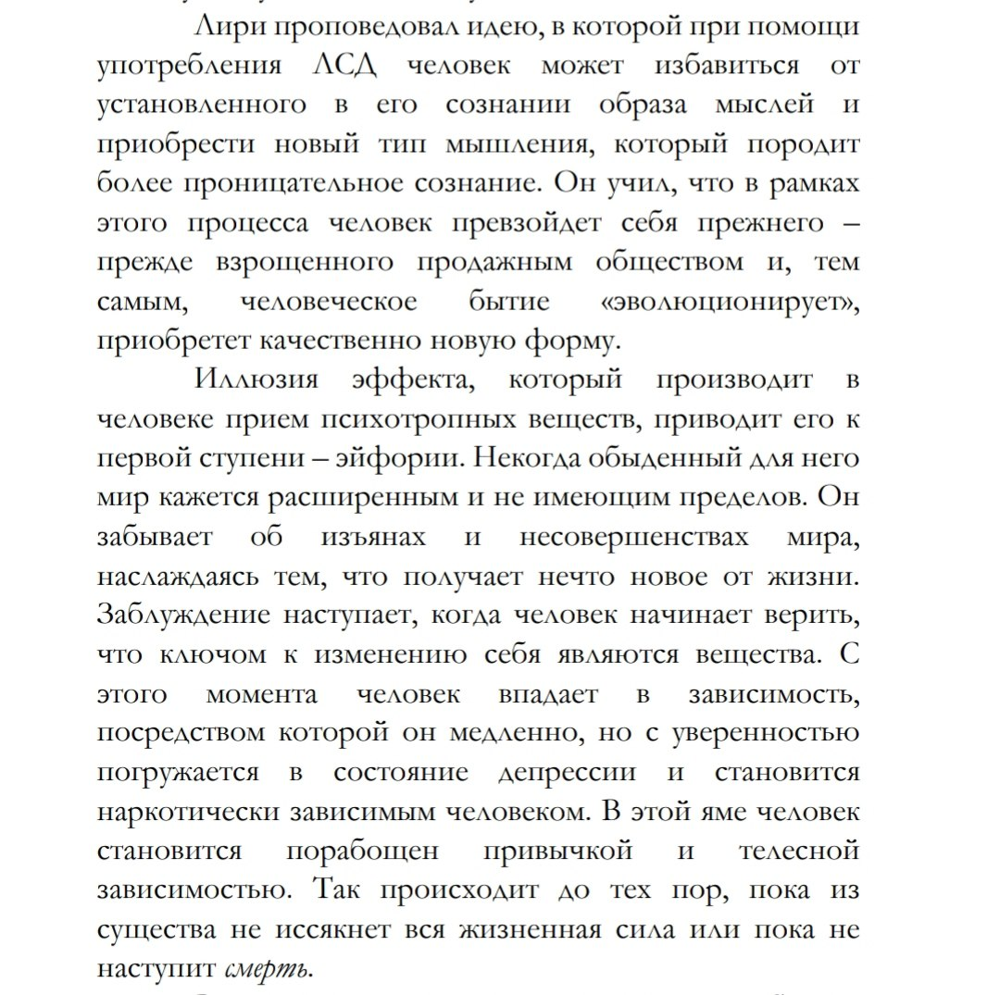
Свою скандальную известность Тимоти Лири получил за исследование влияния психоделиков на психику и нервную систему человека. Его исследования были в самом разгаре, когда психоделики (и прежде всего ЛСД) объявили вне закона. Эксперименты пришлось прекратить, но отказываться от психоделиков Лири не собирался и пожертвовал ради исследований профессиональной карьерой и репутацией академического учёного.
Лири получил огромную популярность в разгар движения хиппи. Со временем в прессе его стали называть «ЛСД-гуру». Лири активно пропагандировал психоделики, выступал с лекциями и написал ряд книг, посвящённых расширению границ человеческого сознания.
Интерпретация псалма
САТАНИНСКАЯ ИЗВЕРЖЕННАЯ ИНТЕРПРЕТАЦИЯ ПСАЛМА 23:
-
Дьявол – мой проводник, я не буду в небесном рабстве.
-
Он лежит со мной на безлюдных полях сражений и ведет меня по берегам рек, полных крови моих врагов.
-
Он восстанавливает мою душу. Он направляет меня по путям порока ради Своего имени.
-
И я с радостью иду по долине тени смерти, я не буду бояться Христа, потому что Ты со мной; Твой молот и Твой жезл утешают меня.
-
Ты готовишь стол передо мной в присутствии трупов моих врагов. Ты помазываешь мою голову их кровью; мой кубок переполнен.
-
Несомненно, злоба и презрение будут следовать за мной все дни моей жизни, и я буду жить в Царстве Господа Сатаны вечно.
Айсберг
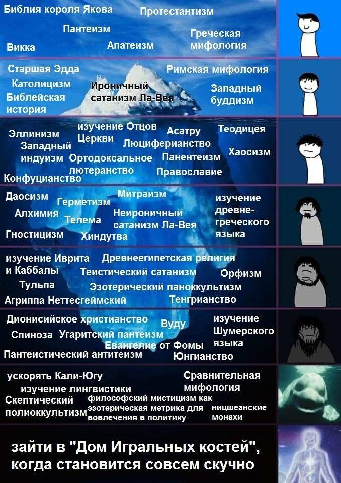
Любопытное:
Библия короля Якова — английский перевод Библии 1611 года, оказавший большое влияние на английскую культуру и протестантизм.
Пантеизм — представление о Боге и Вселенной как о единой реальности. Природа может рассматриваться как проявление божественного.
Викка — современное неоязыческое религиозно-магическое движение, сформировавшееся в XX веке.
Старшая Эдда — сборник древнескандинавских мифологических и героических текстов.
Библейская история — изучение Библии как религиозного, исторического и литературного источника.
Эллинизм — современное возрождение древнегреческой религии.
Панентеизм — идея, согласно которой всё существует в Боге, но Бог при этом больше, чем Вселенная. Это отличается от пантеизма: пантеизм обычно отождествляет Бога и Вселенную.
Теодицея — философско-религиозная попытка объяснить, как существование зла согласуется с существованием доброго и всемогущего Бога.
Асáтру — современное движение, реконструирующее древнескандинавские верования.
Митраизм — древний культ Митры, особенно известный по римским мистериальным сообществам.
Эзотерический паноккультизм — идея синтеза множества оккультных и религиозных систем. Это не строго единое историческое учение, а скорее собирательное обозначение.
Угаритский пантеизм — отсылка к религии древнего города Угарита и его богам, включая Эла, Ваала и Ашеру.
Откровение 1:18
Откровение 1:18 — стих из Нового Завета, из первой главы Откровения Иоанна Богослова (Апокалипсиса). В синодальном переводе он звучит так:
«и Живый; и был мёртв, и се, жив во веки веков, аминь; и имею ключи ада и смерти».
Контекст: Иоанн, находясь в изгнании на острове Патмос, видит грандиозное видение: Сына Человеческого с огненными глазами, голосом как шум вод и светом лица как солнце. Иоанн падает к его ногам «как мёртвый». Тогда Христос кладёт на него руку и говорит (ст. 17–18): «Не бойся; Я есмь Первый и Последний, и Живый; и был мёртв, и се, жив во веки веков».
Тофет
Тофет — место на юге Иерусалима, в долине Еннома, давшем название Гееннe. Известно из Библии как место, где впавшие в идолопоклонство жители города могли приносить жертвы.
Тофет фигурирует в мрачных пророчествах Иеремии («город сей сделаю подобным Тофету. И домы Иерусалима и домы царей Иудейских будут, как место Тофет, нечистыми»). В иудейской традиции Тофет, наряду с Геенной, стал символом ада. По мнению некоторых раввинов, врата ада расположены в этом месте.
Языческие обряды были прекращены при царе Иосия. Он, среди других действий своей религиозной реформы, осквернил долину Еннома и в особенности Тофет, чтобы впредь отпавшие от монотеистического иудаизма жители Иудейского царства не совершали языческие религиозные обряды.
Шан Ечто
«Шан Ечто» — это эзотерический термин (также известный как «Чёрный Отче наш»), обозначающий христианскую молитву «Отче наш», записанную или произносимую задом наперёд. Название образовано путём прочтения слов «Отче наш» справа налево.
Мани-колесо
Мани-чхос-кхор или мани-колесо - цилиндр на оси с рукоятью, внутри которого находится свиток со священными мантрами (чаще всего «Ом мани падме хум»).
Считается, что вращение барабана по часовой стрелке равносильно многократному устному прочтению этих мантр.